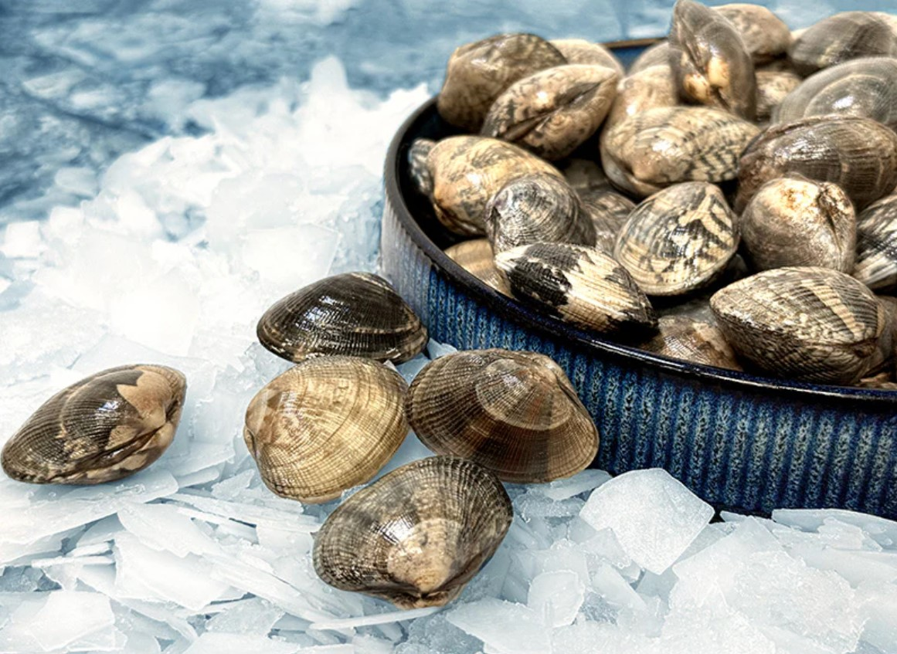
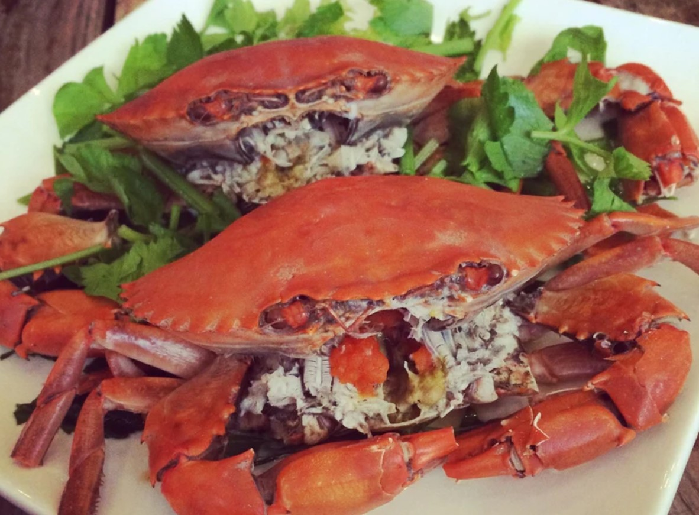
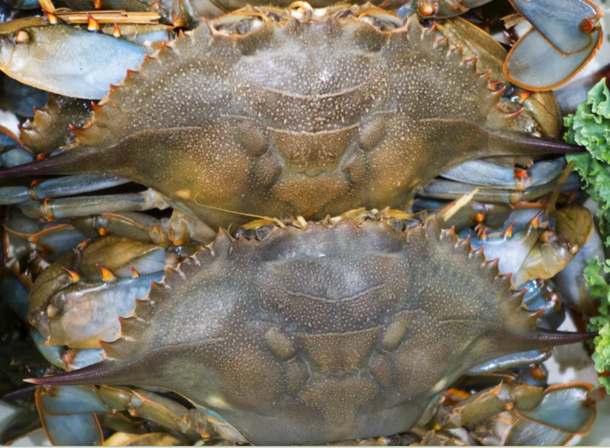
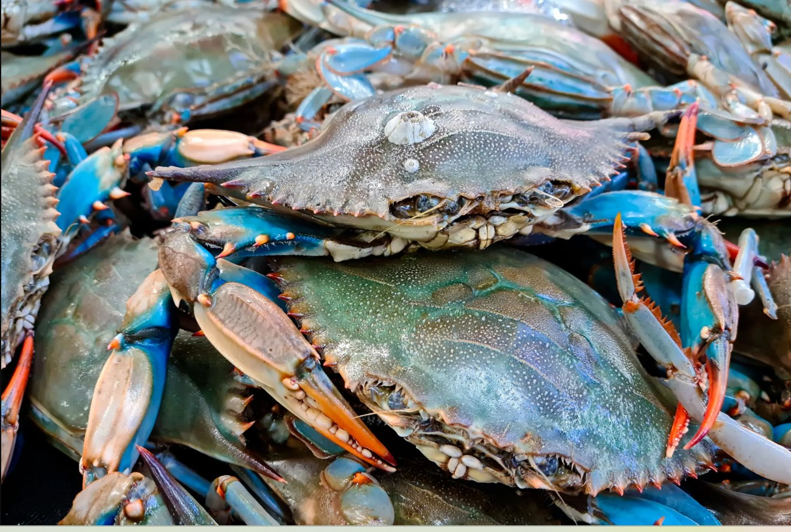

Clams

Indulge in the succulent and savory flavor of Clams. These
plump and juicy clams are perfect for impressing guests or
satisfying your seafood cravings. Delight in the rich taste
and satisfying texture of our steamer clams, caught fresh
from the waters and ready to be enjoyed. Treat your taste
buds to a delectable experience with every bite! Use in
pasta dishes, cioppino, soups -- or just plain steamed with
garlic and drawn butter!
Count : 20+
Price : Rs.700/-
Net : 1 KG with ice 50:50 ratio
Product : Import
Crab

Soft-shell crab is a culinary term for crabs that have a
soft exoskeleton and are edible as a whole as well.Popular
dish – fried soft shell crab and also used for sushi (Shelf
life 365 days – Frozen) Country Of Origin – Indonesia
Count : 10+
Price : Rs.1000/-
Net : 1 KG with ice 50:50 ratio
Product : Import
Normal Crab

We understand that cleaning crabs can be a time-consuming
and messy task, which is why we offer Sea Crab with Shell
Open - a convenient solution for all seafood lovers. With
the shell already expertly cracked open, our Sea Crab Meat
allows you to skip the arduous process of getting to the
succulent meat hidden inside. We've taken care of the dirty
work, saving you time and effort in the kitchen. Now you can
easily access the premium-quality crab meat without the
hassle of breaking through the tough shell.
Our Sea Crab
Meat is carefully selected from the freshest catches,
ensuring a superior level of flavor and tenderness in every
bite. The meat is juicy, sweet, and packed with natural
sea-infused goodness.
Nutrient Benefits :
Indulge in the nutritional bounty of our
Fresh Sea Crab Whole, packed with protein essential for
muscle building and maintenance. Rich in omega-3 fatty
acids, vitamin B12, and selenium, this delectable crustacean
offers a holistic approach to improving overall health and
preventing chronic conditions. While savoring its rich
flavors and exquisite textures, relish in the benefits of
these vital nutrients. However, it's important to note its
sodium content, with 376 mg in a 3-ounce portion. Order to
enjoy unparalleled freshness and nutritional richness of our
Fresh Sea Crab Whole.
Storage Information :
Storage Information: Store under refrigeration at 18°C or
below, in hygienic conditions. All our fish & seafood is
passed through safety & quality checks to ensure the
highest/safest quality.
Count : 6+
Price : Rs.600/-
Net : 1 KG with ice 50:50 ratio
Product : Import
Blue Crab

We understand that cleaning crabs can be a time-consuming
and messy task, which is why we offer Sea Crab with Shell
Open - a convenient solution for all seafood lovers. With
blue shell already expertly cracked open, our Sea Crab Meat
allows you to skip the arduous process of getting to the
succulent meat hidden inside. We've taken care of the dirty
work, saving you time and effort in the kitchen. Now you can
easily access the premium-quality crab meat without the
hassle of breaking through the tough shell.
Our Sea Crab
Meat is carefully selected from the freshest catches,
ensuring a superior level of flavor and tenderness in every
bite. The meat is juicy, sweet, and packed with natural
sea-infused goodness.
Nutrient Benefits :
Indulge in the nutritional bounty of our
Fresh Sea Crab Whole, packed with protein essential for
muscle building and maintenance. Rich in omega-3 fatty
acids, vitamin B12, and selenium, this delectable crustacean
offers a holistic approach to improving overall health and
preventing chronic conditions. While savoring its rich
flavors and exquisite textures, relish in the benefits of
these vital nutrients. However, it's important to note its
sodium content, with 376 mg in a 3-ounce portion. Order to
enjoy unparalleled freshness and nutritional richness of our
Fresh Sea Crab Whole.
Storage Information :
Store under refrigeration at 18°C or
below, in hygienic conditions. All our fish & seafood is
passed through safety & quality checks to ensure the
highest/safest quality.
Count : 6+
Price : Rs.1200/-
Net : 1 KG with ice 50:50 ratio
Product : Import